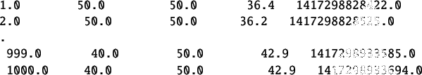

The detailed procedure to perform a local experiment is explained in Chapter![[*]](file:/usr/local/share/lib/latex2html/icons/crossref.png) . A summary of the same is provided in section It is same for this section with following changes.
. A summary of the same is provided in section It is same for this section with following changes.
- Step1: The working directory is prbs/identification
- Step2: Load the functions available in common files directory by executing the command getd<space>..\..\common_files
- Step3: Same
- Step4: Same
- Step5: Load prbstest function by executing command
exec<space>prbstest.sci. Load prbs signal generation function by executing command exec<space>prbs.sci
- Step6: Load Xcos code for prbs test using the command
exec<space>prbstest.xcos
- Step7: Same
The response is as shown in figure 7.3. The data file thus obtained is as shown in the Table 7.1. This data file is available for reference in the directory prbs/identification with name prbs-data-local.txt
Figure 7.3:
PRBS Local response
|
 |
Table 7.1:
PRBS local experiment data
|  |
rokade
2017-04-23